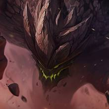
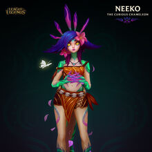
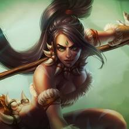
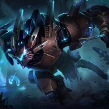

Ixtal
Al este del gran desierto de Shurima, se encuentra Ixtal, una pequeña region selvatica antes afiliada al Gran Imperio de Shurima. Actualmente solo la habitan pequeños grupos de vastayas, criaturas muy parecidas a los humanos pero con rasgo animales y poderes magicos increibles.
Algunos campeones importantes de Ixtal son:
|  |  |  |  |
|---|